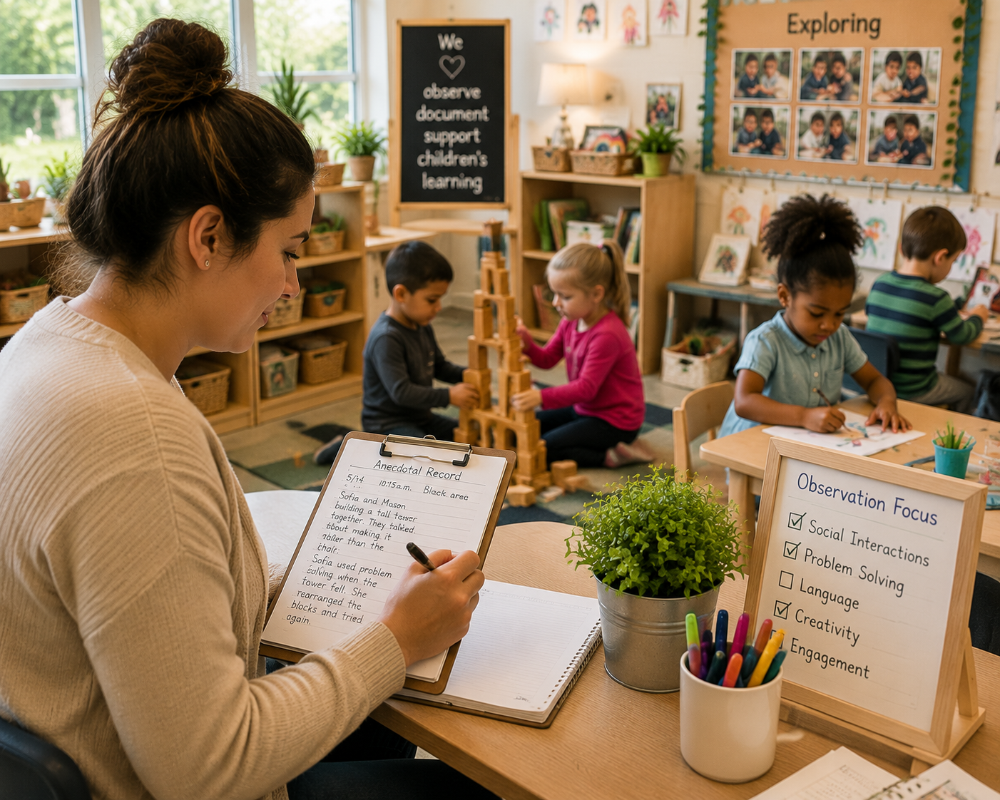
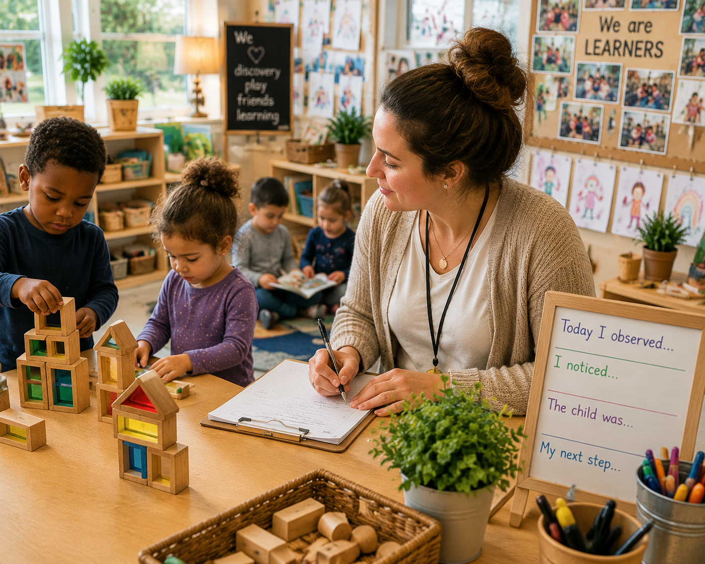
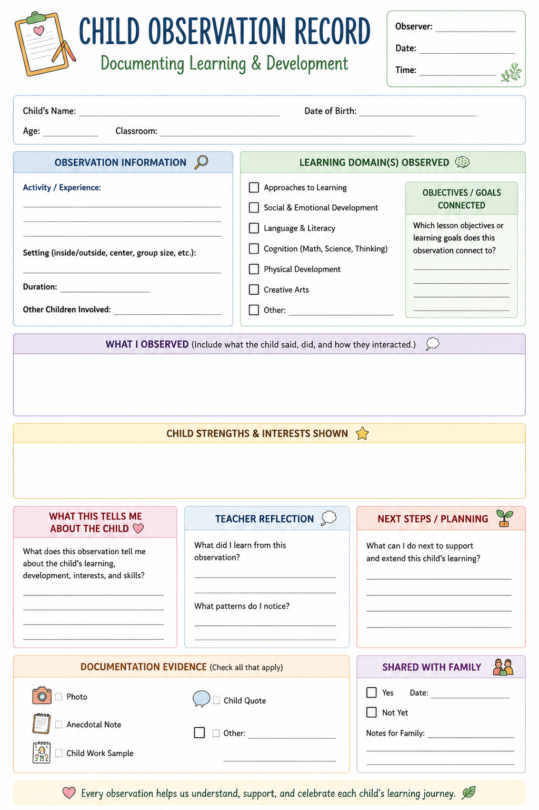
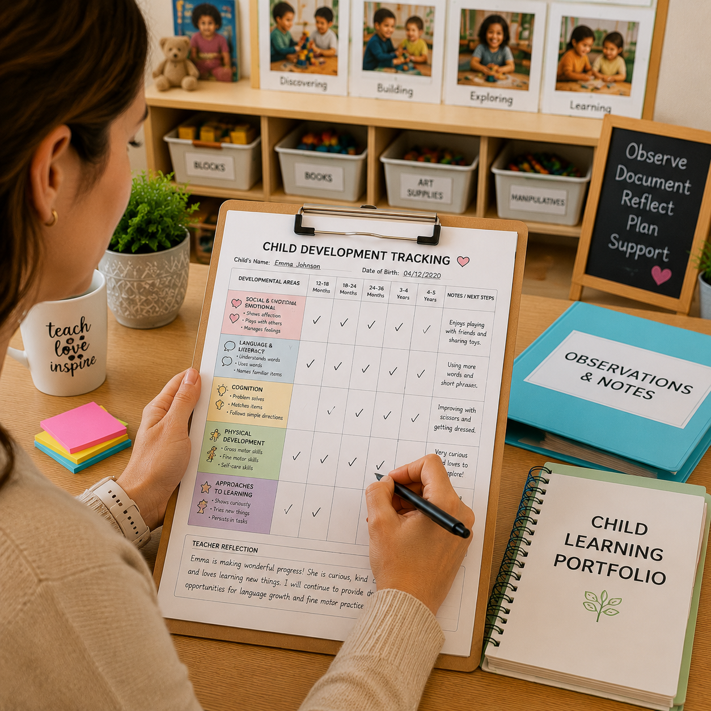

📋 Anecdotal Notes
Quick documentation tools for capturing children's learning moments, conversations, discoveries, and developmental progress.
Support intentional teaching through observation, assessment, and documentation. Capture children's ideas, interests, growth, and discoveries to guide meaningful learning experiences.

The Assessment Center provides educators with tools to notice children's learning, record meaningful moments, and use observations to create responsive classroom experiences. Documentation helps teachers understand children's development, interests, strengths, and next steps for learning.
Tools that help teachers notice children's learning, record progress, and plan meaningful next steps.
Capture children's conversations, interactions, problem solving, creativity, and discoveries through meaningful classroom observations.
Explore Observation Tools →Organize learning evidence through anecdotal notes, learning stories, portfolios, photographs, and classroom documentation.
View Documentation →Support children's growth by observing language, cognitive skills, social emotional development, physical development, and approaches to learning.
Explore Assessment →Observation helps teachers understand children and create responsive learning experiences.
Notice children's interests, questions, skills, interactions, and learning behaviors during daily experiences.
Record meaningful moments through notes, photographs, work samples, and classroom evidence.
Reflect on what children know, what they are developing, and what support they may need.
Plan activities, questions, and experiences that build on children's interests and abilities.
Communicate children's growth, discoveries, and classroom experiences with families.
Use documentation to create intentional teaching strategies and meaningful learning opportunities.
Practical resources to help teachers document learning, organize observations, and support children's development.

Quick documentation tools for capturing children's learning moments, conversations, discoveries, and developmental progress.

Collect children's work samples, photographs, reflections, and evidence of learning over time.

Support intentional planning by connecting observations to developmental goals and learning experiences.
Documentation helps families understand children's growth, interests, accomplishments, and classroom experiences.
Share classroom discoveries and provide ideas families can continue at home.
Celebrate children's experiences through photos, stories, and meaningful documentation.
Create partnerships by sharing progress, strengths, and learning goals.
Effective assessment is more than collecting information. It helps teachers understand children, reflect on teaching practices, and create learning experiences that respond to children's needs and interests.